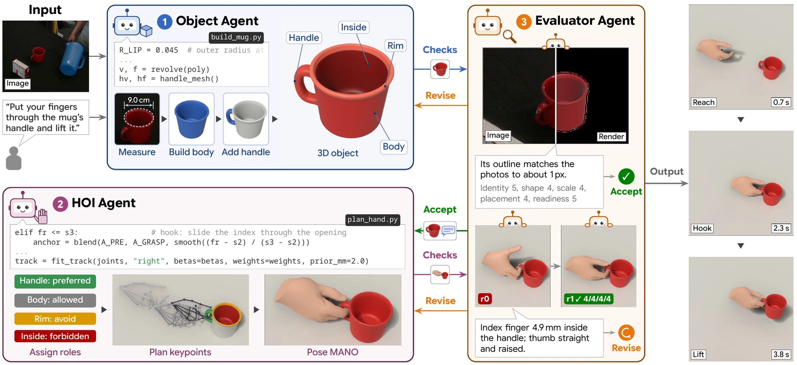

1
Object Agent
Builds each object at real size with named parts, joints and its own physics.
Code with Agents for Physically Plausible 4D Hand-Object Interaction
Korea Electronics Technology Institute (KETI)
TL;DR. CodeHOI writes physically plausible 4D hand-object interaction as a program. Agents build each object with its own physics, specify the hands by their contacts, simulate each kind of matter with an established physics solver and verify the result against physical laws. One framework thus covers both reconstruction and generation across rigid, deformable, co-dimensional and flowing matter.
Input
Evaluator Agent
Program excerpts and reviews are verbatim from each run.
Each stage is a closed loop of writing, evaluation and revision that ends when a round is accepted or the revision budget is spent.

Builds each object at real size with named parts, joints and its own physics.
Specifies each hand by its contacts, fits MANO to them and simulates how each object responds.
Checks each result by measurement and from its renders, then accepts it or returns a review.
Rigid objects follow the grasping hand or rigid-body dynamics, and non-rigid matter runs on the solver of its regime. All solvers share one scene and the same hands, so a single program can mix kinds of matter.
Dough, slime and grains that lose their rest shape.
Soft bodies that recover their rest shape.
Cloth, rope and paper, thinner than a grid cell.
Thin, incompressible liquids such as water.
Reference: the CodeHOI result. Tracking: SharpaWave hands on Franka arms in Genesis.
CodeHOI-Bench comprises 20 real-world reconstruction clips and 80 generation tasks, balanced across the four kinds of matter.
Four frontier models serve as the backbone under identical instructions and tools. A task is solved only if all of its hidden success conditions hold without a physical violation.
@article{park2026codehoi,
title = {CodeHOI: Code with Agents for Physically Plausible 4D Hand-Object Interaction},
author = {Park, Seonghwan and Chang, Inho and Park, Min-Gyu},
journal = {arXiv preprint arXiv:2611.31976},
year = {2026}
}